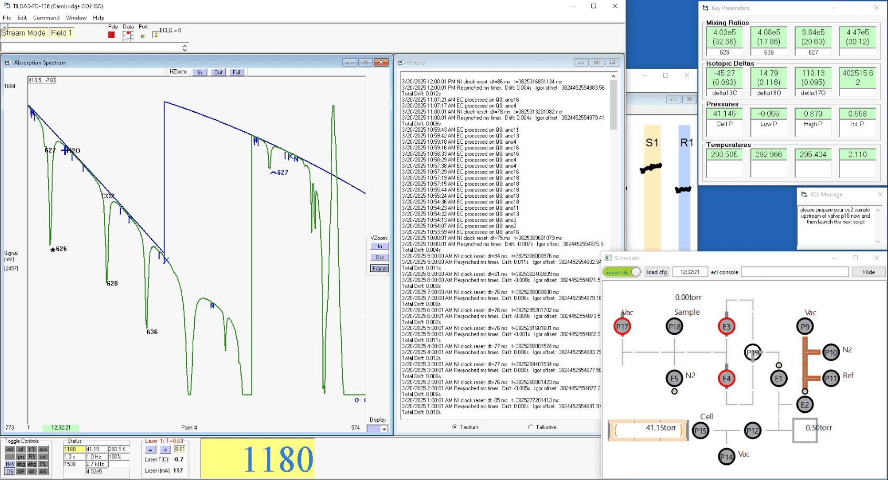

Aerodyne

Procedures
- chiller
- main power
- vacuum pump
- check valve closed
- turn on pump
- slowly open valve
- TDLWintel
- slowly open inlet valve
- Toggle Controls–right click PL (pressure lock)
- Current Sig & Field 1, tune laser T
- Stream Mode
- Toggle Controls–enable flk4 (reference lock)
- Toggle Controls–enable wd (write data), ass (automatic spectrum save)
Turn off:
- wd, ass, flk4, PL
- Stream Mode -> Current Sig
- flush with dry air (avoid condensation)
- vacuum valve. saturated reading: ~ 100 torr
- TDLWintel
- PC
- main power
- chiller, vacuum pump
Schedules–ECL scripts (.xyz)
Status check
- Stream Mode
- blue line
- Command–Quick Keystrokes–Kopy konditions to klipboard
- laser
- T: 0.01 °C, 0.3 mA
- light level: Status. <10%, usually higher is better
- gas pressure
- Status
- fitting quality
- DT (transmission mode)
- residual
- particle filter: white
- chiller
- liquid level
Data
- wd: off, and then on
- Igor
- Macros–TDLWintel File Loader Functions–STR Files Loader
IRIS
IRIS (Interface for Runs of Interleaved Samples)
- WintellgorLink
- connect
Misc.
Mixing Ratio Noise
- Concentration Stripchart: ppb (SD)
- Allan-Werle Variance (Igor: Macros–Data Plots: Allan, Leak, etc):
- random noise domination: decrease with increasing time window
- instrumental drift domination: increase with increasing time window
Tune: Laser tuning rate
wavelength ~ current
- Command–Quick Keystrokes–Fix all peak positions (in the fitting)
- Edit–Tuning Rate Params (right-click: small change)
- residual
- Command–Duplicate tuning rate (from Field 1)
- flk4: off, and then on
2025-03-10, Rick Wehr:
- Tuning rate
- Show Tune Rate (dWaveLen/dt)
- DS->DR (! disable AR)
- Stretch/Shrink, DR: … => better: “W” shape => best: small peaks blending into the neighbouring noise
- right-click: smaller step
- Floating tuning rate (auto Stretch/Shrink), Laser 1 & Laser 2
- Edit details:
- only do it when the Tune Rate is not too bad (e.g., Mixing ratio threshold > 40000 ppb;
bdFits1in Script_6) - averaging time = interval = 60s
- only do it when the Tune Rate is not too bad (e.g., Mixing ratio threshold > 40000 ppb;
- tick
- implement
- Edit details:
- Fit para for non-linear fitting
- #6: Fit this species at ambient P
.hitfiles
Sample size
- REG 13: 6–8